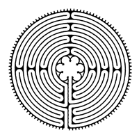

Peterson Nutrition and Fitness: Services
Testimonials:
Christie's Success Story
7 Apr 2009 Author: Beadie @ What I Ate Yesterday In: Uncategorized
For the first time ever, I had the pleasure of walking in a labyrinth with my girls from group therapy yesterday. For those of you that don’t know a labyrinth in a path that looks like a maze but isn’t a maze at all. It only has one way in and one way out and it a wonderful metaphor for life. Walking a labyrinth is supposed to be a moving meditation and I must admit, I was skeptical that walking around a circle would do much for me. Until last weeks group, we were all afraid of doing it even. We had the impression that we would be in a maze of bushes and not be able to find our way out. E assured us that there were no bushes, we didn’t need to arm ourselves with flashlights or walking sticks and that we would enjoy the experience. And I must say, she was right.
I walked into the labyrinth thinking that I would be the one to not get anything out of it. As I looked down at the path before me, the same thought kept crossing my mind: I am moving too fast. Each time I would pass another person on their path and we would bump another thought would cross my mind: I am getting in their way. I continued to walk to the center of the labyrinth focused on these two feelings and great anxiety began to rise. When I made it to the middle I focused my energy on taking in what the labyrinth had taught me. I am moving too fast and I am getting in the way. Slowly but surely, I processed these feelings and realized the metaphors they symbolized in my life.
I am moving too fast. I think this represents my desire to get to my “goal” weight too quickly and anxieties about the future. I am so focused on losing the weight or my anxieties of the moment, I’m not taking the time to appreciate where I am on the path right now. Life has taken me through many twists and turns and I am learning and building from each and every one of them. I WILL reach my goals but only when the time is right for me.
I am getting in their way. This one is fully loaded, that is for sure. I took a while for this thought to bubble up to my mind. I was standing in the center wondering what this could mean when the urge to put my hands at my heart center came to me. I thought that I didn’t want to do it because the others might think I was strange standing in mountain pose in the labyrinth. And then it clicked. I’m not getting in their way, they are getting in mine. Not them in particular but all of the other people that I let influence my decisions about life. The especially speaks to me in the concept of when I followed the weight watchers core plan and I hung out on the message boards. I remember that I gave up on the core program when it didn’t seem to fit anymore. The going got tough so I gave up.
What I realize now is that I let others, the ones on the message board, convince me that it wasn’t OK to make that program fit my life or “tweak” if you will. What I realize now is that whatever I do, with the help of my RD, I can come up with a plan that works for me and quite possibly only me. One more key factor in that is my current support system. Back then, I didn’t have the strong network of friends, family and treatment team that I do now. I now have people in my life that understand me and my disorder and they support me 100% along the way. They support me no matter what I am doing with food in the moment, weight watchers, tweaking, binging, calorie counting, being a gym rat, whatever, they support me through all of it.
As I finished processing all of these thoughts, I was ready to leave the middle of the labyrinth. My eyes popped open and everyone was still standing in the middle. I thought that I didn’t want to be the first one to leave and realized that if I waited for someone else that I wouldn’t be carrying what I learned from the circle away from the circle. I put one foot in front of the other and made my way out. At first, I felt a sense of loneliness being the only one on the path again and then E, my RD, stepped onto the path and relief washed over me. I have people walking this with me, the right people.
I continued to walk my way out feeling strong and capable of taking what I learned with me. At one point, I was walking side by side with E and I couldn’t help but smile. She will help me. Then, Kristen, Frances and I all crossed each others path at the same time. I felt reaffirmed that I do, in fact, have the right people with me. I felt empowered and ready to leave the labyrinth. As I approached the exit an answer to a problem I had been facing bubbled up to my mind and I felt like a light was turned on in a very dark room and this answer is about you, my dear blog readers.
About ten days ago, I revealed in a blog post that I had been abused in every way as a child. I had admitted, in the past, physical abuse but never admitted that the abuse went farther than that. When I got to the end of that post, fear struck me like no other. I wouldn’t be able to handle it if someone told me how yummy my breakfast looked after revealing so much so I went back to the beginning of the post and got on my soap box. I stayed on it for a couple of days only to discover that I must have been misunderstood. When I told you all that I didn’t want comments about my food, I didn’t mean in general. What I was telling you was that when I reveal so much and feel so broken inside, I need more than that and I think that some of you thought that it meant that I didn’t need you at all. And that, my friends, is not the case at all.
So, what is the solution to this problem I was having? Posts written just like this one. I have decided that moving forward, I will no longer write about the food when “it” isn’t about the food. I’m not sure why I never thought of this before but this decision makes me feel strong and capable of getting the kind of support I need without going to the extreme of deleting comments. This blog is so essential in my recovery and your feedback is such an important part of that. I hope that I didn’t make anyone feel uncomfortable when I was ranting and raving but I was so afraid of my feelings being belittled by a sandwich. I hope you all will understand and continue to support me. So please, comment away and in the future, I will only write about what I need your feedback on.
Namaste, my friends.